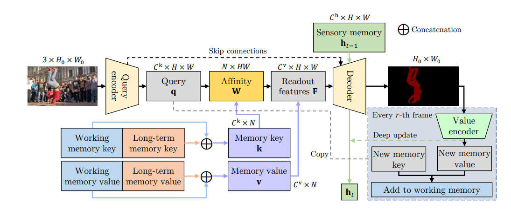
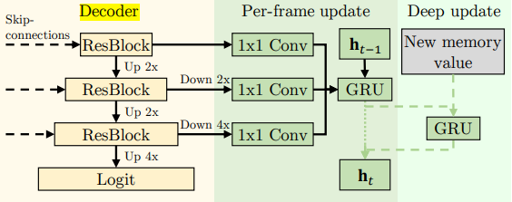

XMem
使用了三种类型的特征记忆（感官记忆，工作记忆，长期记忆）使得可以处理长视频而不会导致显存占用量过大，同时在短视频上也有良好的性能。为了定期将工作记忆中的重要特征整合到长期记忆，还开发了一个记忆增强算法。
三种记忆简介
- 感觉记忆：短期存储的低层次信息，如物体位置，是通过每帧将模型中Decoder中的多尺度特征，馈送至一个GRU传递、更新得到一个的隐藏表示。每隔 r 帧，会通过将模型掩码经过 Value Encoder的输出与感觉记忆经过另外一个 GRU 来深度更新（Deep Update）感官记忆。
- 工作记忆：可以在几秒钟的范围内实现准确的匹配，由一个键与一个与之对应的值组成，每隔 r 帧，将当前帧中 QueryEncoder输出的Query 作为工作记忆的键，输出的掩码经过一个值编码器的输出作为工作记忆的值。
- 长期记忆：存储一些紧凑而有代表性的特征，从而提高分割质量，当工作记忆达到一个上限时，就会通过一个内存整合过程，从工作记忆（working memory）中选择一些原型，并用一个内存增强算法整合到长期记忆。过于久远的记忆也会被丢弃。
利用记忆

感觉记忆与长期记忆
感觉记忆与长期记忆的 key 与 value 分别拼接在一起，得到 Memory Key 与 Memory Value.
- Query：为Query Encoder的输出
- Affinity：是通过对包含每个 Memory Key 和Memory Query 之间的两两相似性的相似矩阵 S 进行softmax得到的。
- Readout Feature：根据 Affinity 对不同特征记忆存储中的 value 进行加权求和，得到的一个综合的特征表示。
工作记忆
工作记忆被与Readout Feature Concat在一起，共同作为Decoder的输入。
长期记忆的更新
原型选择
原型为工作记忆中一小部分最有代表性的特征，即那些在相似矩阵中有高概率的特征，把这些原型的键提取出来拼接在长期记忆中，作为长期记忆的一部分。原型的值还会通过一种记忆增强算法来丰富
记忆增强
记忆增强的方法是用一种加权平均的方式，用原型的键和候选的键计算出相似度并加全平均得到原型的值（与Readout Feature一样）。把它们加入到长期记忆中。
记忆淘汰
虽然长期记忆非常紧凑，但过长的视频还是会占满内存。引入了一种最不常用淘汰算法，以累积相似度来定义一个特征的使用频率。当内存达到预设的限制时，把使用频率最低的特征从长期记忆中移除。
工作记忆的更新
工作记忆由键和值组成，键是编码图像得到的 Query，值是从图像和 mask 编码得到的。每隔r帧，我们会把 Query 复制为一个新的键，并且用图像和预测的mask生成一个新的值。新的键和值会被加入到工作记忆中，并且在后续的帧中用于内存读取操作。为了避免内存占用过大，我们限制了工作记忆中的帧数 T，当T 超过一定数量时，会把多余的帧转换成长期记忆。
感官记忆的更新

感觉记忆是用一个隐藏的表示来存储的，用一个 GRU 来传递更新。使用解码器的多尺度特征。每隔 r 帧，在生成一个新的工作记忆帧时，也会执行一个深度更新。从值编码器得到的特征会用另一个 GRU 刷新感觉记忆。以丢弃冗余信息、增强特征表达。